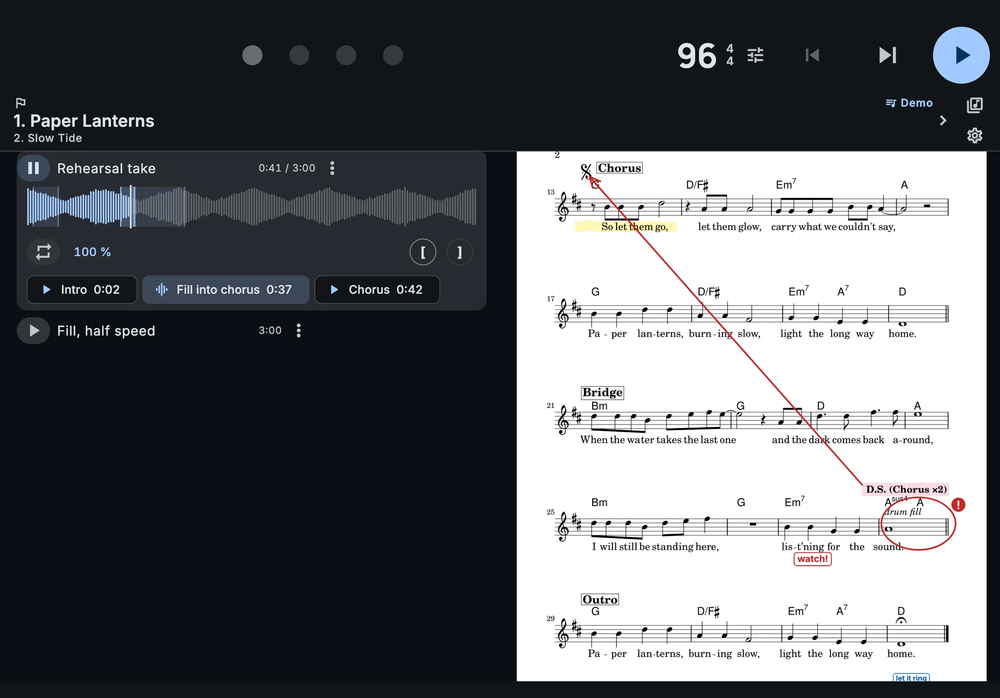
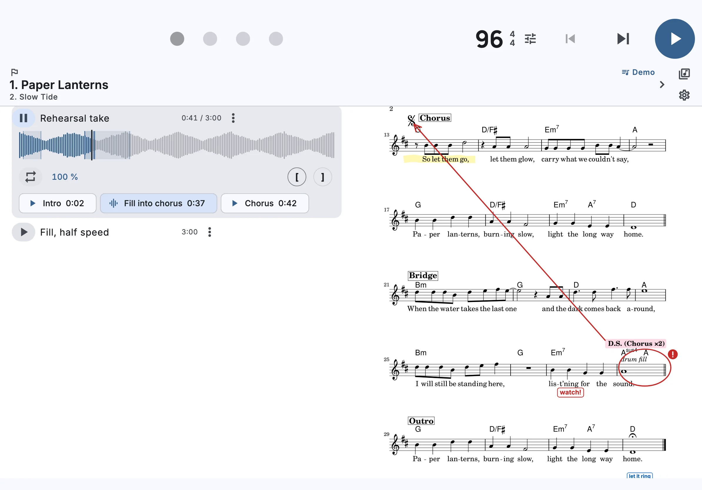
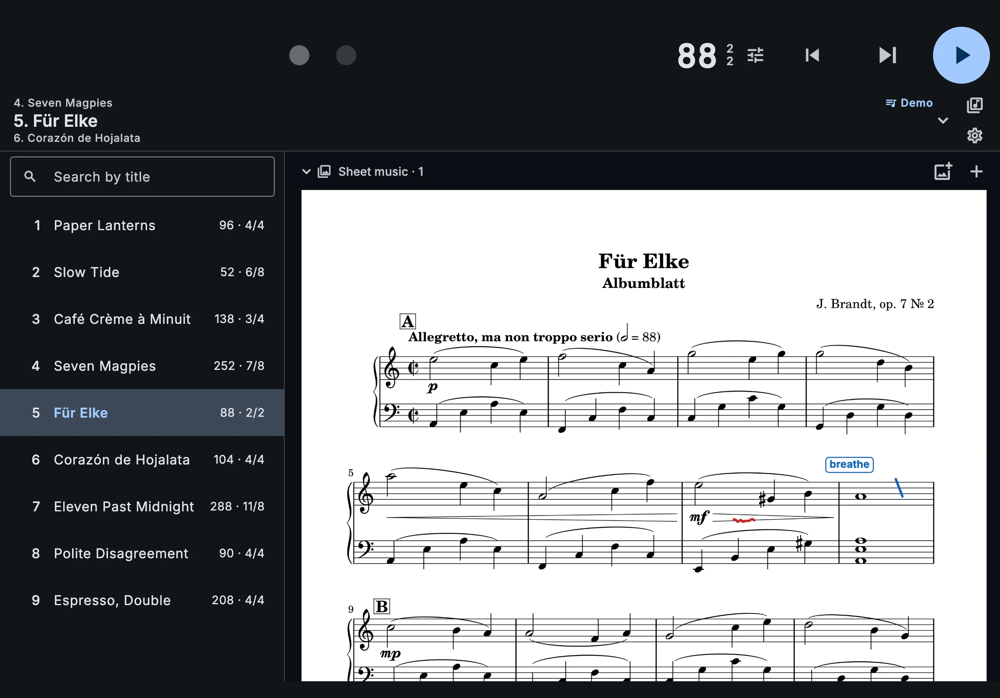
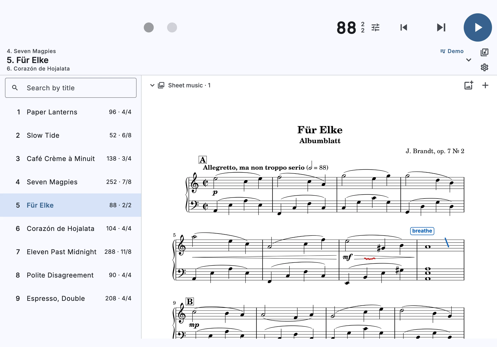

كل شيء بنظرة واحدة
الأغنية الحالية وسرعتها والأغنية التالية وملاحظاتك ظاهرة دائمًا. على المسرح لا شيء زائد يشتّت انتباهك.
قوائم أغانيك، وملاحظات كل أغنية، ونقرة ثابتة كالصخر — في مكان واحد، في غرفة البروفات وعلى المسرح.
مجاني · لا إعلانات · لا حساب · iPhone وiPad وMac وAndroid
الأغنية الحالية وسرعتها والأغنية التالية وملاحظاتك ظاهرة دائمًا. على المسرح لا شيء زائد يشتّت انتباهك.
اكتشف السرعات بالاستماع، وانقل قوائم أغانيك من Tempo أو جدول بيانات أو ChordPro، واحتفظ بكل شيء في ملفات Markdown تملكها أنت.
يحفظ الوقتَ محركُ صوت يعمل مباشرة مع مخرج الصوت متجاوزًا واجهة المستخدم — فلا يستطيع جهاز مشغول تحريك نبضة.
قوائم أغانٍ بقدر ما تحتاج — واحدة لكل فرقة ولكل حفل. ابحث عن أغنية بعنوانها، واسحب الأغاني لترتيبها، وبدّل الأغنية دون إيقاف النقرة: تبدأ الأغنية الجديدة على النبضة الأولى. تتغير سرعة الإيقاع والميزان الموسيقي في شاشة تحرير منفصلة، فتبقى الشاشة الرئيسية مرتبة.
احتفظ بالبنية والمداخل والمقاطع الصعبة بجانب النقرة: نص منسق، ونوتات PDF، وصور للنوتات، وصوت مع علامات مسمّاة. كرّر مقطعًا في حلقة أو أبطئه لتتمرّن عليه. سجّل فكرة بالميكروفون. أضف تعليقات على أي PDF أو صورة بالقلم وقلم التمييز والأختام الموسيقية — يبقى الملف الأصلي كما هو، ويمكنك تصدير نسخة مع التعليقات بصيغة PDF أو PNG.


جهّز قائمة الأغاني على Mac، وتمرّن مع iPad على حامل النوتة، واعزف الحفل من iPad إن كان على المسرح متّسع له، أو من iPhone إن لم يكن. حين تكون المكتبة في iCloud Drive، يفتح كل جهاز Apple الملفات نفسها. على Android تبقى قوائم الأغاني على الجهاز نفسه: انقلها إلى هناك وبالعكس عبر تصدير ZIP — يأخذ معه المرفقات والتعليقات. المزامنة هي أحدث جزء في Primissimo: إذا بدا لك شيء غير صحيح، فراسلنا عبر «إرسال رأيك» في الإعدادات.


قوائم الأغاني ملفات Markdown في مجلد التطبيق في iCloud أو في أي مجلد تختاره، لا سجلات محبوسة في قاعدة بيانات. افتحها في أي محرر نصوص، لكن حرّرها في التطبيق. قوائم الأغاني نفسها موجودة على iPhone وiPad وMac. تجتمع التعديلات من كل أجهزتك، حتى تلك التي أُجريت دون اتصال؛ وإذا غيّر جهازان الشيء نفسه، تُحفظ النسختان وتختار أنت. لا تتغير قائمة الأغاني المفتوحة أثناء العزف: تنتظر التغييرات الجديدة الضغط على «تطبيق».
---
schema: primissimo-setlist/2
title: Friday Night — Blue Room
---
# Friday Night — Blue Room
## Uneven Ground
- **bpm:** 132
- **meter:** 7/8
- **grouping:** 3+2+2
- **accents:** `>..>.>.`
Count it **3+2+2**. Ride on the groups.

افتح قائمة أغاني Tempo (.slist) أو جدول بيانات (.csv، .tsv) أو ملفات أغانٍ من ChordPro وOnSong (.cho، .chopro، .chordpro، .crd، .pro، .onsong)، وراجع كل أغنية قبل الاستيراد. من Tempo تنتقل قيمة BPM والميزان والنبرات والأنماط الإيقاعية والنبضات المكتومة، ومن كتب الأغاني تنتقل الكلمات والأكوردات إلى ملاحظات الأغنية. وما لا يمكن نقله يظهر قبل الاستيراد، لا على المسرح.
تأتي النقرة من محرك صوت مخصص يعمل مباشرة مع مخرج الصوت في الجهاز متجاوزًا واجهة التطبيق. يضع كل نبضة في مكانها الدقيق داخل تدفق الصوت، فلا يؤدي فتح ملاحظة أو تمرير قائمة الأغاني أو تبديل الأغنية إلى تحريك أي نبضة.
من 10 إلى 400 BPM. من 1 إلى 16 نبضة في المازورة على 2 أو 4 أو 8 أو 16، مع عدّ سرعة الإيقاع بنوتات النصف أو الربع أو الثمن أو الربع المنقوطة. قسّم مجموعات النبضات أو ادمجها — 3+2+2 أو 2+2+3 أو أي تقسيم آخر — ويتبعها المؤشر. امنح كل نبضة واحدًا من خمسة مستويات، من القوية إلى المكتومة. تقسيمات حتى نوتات سدس عشر والسداسيات، بما فيها الشافل، وستة أصوات للنقرة، وضبط سرعة الإيقاع بالنقر مع رسم بياني لنقراتك.
لا تعرف الـBPM؟ اختر ملفًا صوتيًا أو دع Primissimo يستمع عبر الميكروفون — إلى تسجيل أو إلى الفرقة في القاعة. شبكة عصبية تتتبع النبضات تجد سرعة الإيقاع على جهازك مباشرة، ولا يغادر الصوت الجهاز أبدًا. نصّف النتيجة أو ضاعفها بلمسة واحدة. وإن لم يكن للموسيقى نبض ثابت، ينبّهك التطبيق إلى أن القيمة تقريبية.
صُمّم كل مظهر على حدة، لا بمجرد عكس الألوان. جرّب المفتاح في زاوية هذه الصفحة — تتبدّل الشاشات معها.
40 لغة للواجهة، بما فيها الكتابة من اليمين إلى اليسار.
بلا إعلانات ولا حساب ولا اشتراك ولا فترة تجريبية — كل ما هو موصوف هنا يعمل دون دفع. لا تحتوي إحصاءات الاستخدام المجهولة على أي معرّف، ويمكن إيقافها من الإعدادات.
جولة قصيرة في قائمة الأغاني والملاحظات والنقرة.
نعم. لا إعلانات ولا حساب ولا اشتراك ولا حد زمني، ولا يُباع شيء داخل التطبيق. قد تظهر لاحقًا إضافات مدفوعة بمزايا جديدة. ولا ننوي سحب أي شيء مجاني اليوم.
قد يضبط تطبيق المترونوم النبضاتِ بالمؤقّت نفسه الذي يحدّث الشاشة. وحين ينشغل الجهاز بتطبيقات أخرى قد يتأخر هذا المؤقت فتتعثر النقرة. في Primissimo يضع كلَّ نقرة في تدفق الصوت محركٌ يعمل مباشرة مع مخرج الصوت متجاوزًا واجهة المستخدم، فلا يُخرج جهاز مشغول أي نبضة عن موعدها.
نعم. تعمل قوائم الأغاني بملاحظاتها والمترونوم واكتشاف سرعة الإيقاع دون اتصال مع كل ما هو موجود على الجهاز. تُكتشف سرعة الإيقاع على الجهاز نفسه، ولا يُرسل الصوت إلى المطوّر أبدًا. يلزم الاتصال للمزامنة عبر iCloud وتنزيل الملفات غير الموجودة بعد على هذا الجهاز، ولإرسال رأيك، ولإحصاءات الاستخدام الاختيارية، وللتحقق من وجود إصدارات جديدة.
في ملفات Markdown داخل المجلد الخاص بالتطبيق في iCloud Drive، ويظهر باسم «Primissimo» في تطبيق الملفات وفي Finder. لذلك تتزامن قوائم الأغاني بين أجهزتك وتبقى حتى لو حذفت التطبيق. ومن دون iCloud تُحفظ على الجهاز، وعندما تشغّل iCloud يعرض عليك Primissimo نقلها إليه. ويمكنك نقل المكتبة إلى مجلد آخر من الإعدادات ← مجلد المكتبة ← تغيير. يمكنك فتح هذه الملفات أو إرسالها أو تحويلها في أي وقت. حرّر قوائم الأغاني في التطبيق: فتعديل الملفات في محرر نصوص ليس طريقة عمل مدعومة، وقد تُستبدل هذه التعديلات عند المزامنة.
نعم. سجّل الدخول بمعرّف Apple نفسه وأبقِ iCloud Drive مفعّلًا: يفتح كل جهاز من تلقاء نفسه المكتبة نفسها في مجلد التطبيق في iCloud، دون أسئلة عند التشغيل الأول، ويعرض قائمة الأغاني التي كانت معك على المسرح آخر مرة. وإذا نقلت المكتبة إلى مجلد آخر، فاختر ذلك المجلد على كل جهاز من الإعدادات ← مجلد المكتبة ← تغيير. يجمع Primissimo التعديلات من كل أجهزتك، حتى تلك التي أُجريت دون اتصال بالإنترنت، ولا يضيع أي تعديل بصمت: إذا تغيّر الشيء نفسه على جهازين، تُحفظ القيمتان، وتظهر بجانب الأغنية العلامة ⇄، وتختار أنت أيهما يبقى. وتُدمج الملاحظات التي عُدّلت على جهازين سطرًا بسطر. ولا تتغيّر قائمة الأغاني التي تعزفها أثناء العزف: تنتظر التغييرات القادمة من الأجهزة الأخرى حتى تضغط «تطبيق». ولا يسأل Primissimo عن هوية المكتبة إلا إذا كان في المجلد تعديلات يعرفها هذا الجهاز من مكتبة أخرى. والعمل المشترك مع أشخاص آخرين على مكتبة واحدة غير مدعوم بعد. Primissimo تطبيق جديد، والمزامنة أحدث أجزائه: قد لا تعمل بعض الأمور بعد كما ينبغي. وتبقى قوائم أغانيك ملفات عادية في iCloud Drive. نرجو منك بعض الصبر، وأن تخبرنا بأي شيء غريب — عبر «إرسال رأيك» في إعدادات التطبيق أو على الموقع.
تتم المزامنة عبر iCloud Drive: لا يحصل Primissimo على الملف إلا بعد أن ينزّله النظام. افتح تطبيق الملفات وتحقّق مما إذا كانت ملفات أخرى في iCloud Drive تُنزَّل. إذا لم يُنزَّل أي منها، فالمشكلة في iCloud: تحقّق من الاتصال بالإنترنت ومن المساحة الفارغة على الجهاز، أو أعد تشغيله، أو أعد تعيين إعدادات الشبكة (الإعدادات ← عام ← نقل أو إعادة تعيين iPhone ← إعادة التعيين ← إعادة تعيين إعدادات الشبكة؛ وكذلك على iPad). ويفيد أيضًا تحديث النظام: تُصلح Apple مشكلات iCloud Drive في تحديثات iOS وiPadOS. لا توقف iCloud Drive في الإعدادات «لإعادة تشغيله»: فالجهاز يزيل نسخته من الملفات، وسيتعيّن عليه تنزيلها كلها من جديد. ولن تضيع تعديلاتك: يحتفظ بها Primissimo ويرسلها حالما يعمل iCloud مجددًا.
لا. من لحظة تعيين قائمة أغانٍ كقائمة حالية حتى تختار قائمة أخرى، يُبقي Primissimo القائمة على الشاشة كما كانت تمامًا، حتى لو عُدّلت على جهاز آخر، وحتى بعد إعادة تشغيل التطبيق أو الجهاز. أما تغييراتك أنت — سرعة الإيقاع وترتيب الأغاني — فتُطبَّق فورًا. وتُحفظ التغييرات القادمة من الأجهزة الأخرى وتُميَّز بشارة صغيرة، ولا تظهر إلا عندما تضغط «تطبيق». لا تتغيّر الأغنية التي تعزفها أبدًا في أثناء العزف، ولا حاجة إلى وضع الطيران لذلك.
ينسخ الأمر «إنشاء نسخة» في خيارات قائمة الأغاني كل شيء: الأغاني مع ملاحظاتها وسرعة إيقاعها وميزانها ونبراتها وتقسيم النبضة فيها وسائر إعداداتها، والمرفقات والتسجيلات الصوتية. ويمكن أيضًا نسخ أغنية واحدة إلى قائمة أغانٍ: يتيح لك زر «أغنية من قائمة أغاني أخرى» العثور عليها بعنوانها في كل قوائم أغانيك، فتنتقل مع كل ملاحظاتها وملفاتها. وبعد النسخ يصبح الأصل والنسخة مستقلَّين: تتغير الملاحظات وسرعة الإيقاع وتقسيم النبضة وكل ما عداها في كلٍّ منهما على حدة.
في المكتبة، افتح قائمة خيارات قائمة الأغاني واختر «تصدير .zip (مع المرفقات)». يضم الأرشيف قائمة الأغاني وكل الملفات المرفقة بأغانيها: النوتات والصور والتسجيلات الصوتية مع علاماتها وتعليقاتها. أرسله بأي طريقة تشاء: يضغط المستلم «استيراد قائمة الأغاني» في مكتبة Primissimo لديه ويختار الأرشيف. يحصل على نسخة مستقلة، ولا تنتقل التعديلات اللاحقة بينكما.
نعم. افتح ملف .slist، وراجع المعاينة أغنية أغنية، ثم استورد. تنتقل قيمة BPM والميزان والنبرات والأنماط الإيقاعية والنبضات المكتومة، وما لا يمكن نقله يُعرض قبل التأكيد.
نعم. يحتاج جدول البيانات المحفوظ بصيغة CSV إلى عمود بأسماء الأغاني؛ وتُقرأ أعمدة BPM والميزان أيضًا، بينما ينتقل الفنان والمقام والمدة والملاحظات إلى ملاحظات الأغنية. وتجلب ملفات ChordPro وOnSong سرعة الإيقاع والميزان والكلمات والأكوردات. ولإنشاء قائمة أغانٍ واحدة من عدة ملفات أغانٍ، حدّدها كلها معًا في نافذة الاستيراد، فتترتب الأغاني حسب أسماء الملفات.
على الشاشة الواسعة، مثل iPad أو Mac، للتسجيل زر ⋮ يفتح قائمة. أما على iPhone فلا مكان له: اسحب التسجيل إلى اليمين وأكّد الحذف، أو المسه مطولًا لتفتح القائمة نفسها بخيارات إعادة التسمية والنقل والحذف.
إحصاءات استخدام مجهولة من دون أي معرّف، يمكنك إيقافها من الإعدادات، والرسائل التي تختار إرسالها. وعند تفعيل «الإصدارات الجديدة والأخبار» يتحقق التطبيق أيضًا من الموقع مرة في اليوم؛ ولا يعرف الموقع إلا المنصة وإصدار التطبيق والبلد. لا حساب ولا تتبّع إعلاني.
في المزامنة فقط. قوائم الأغاني وملاحظات الأغاني والمرفقات والنوتات بتعليقاتها واكتشاف سرعة الإيقاع والمترونوم والاستيراد تعمل بالطريقة نفسها. الفرق في مكان المكتبة: على أجهزة Apple قد تكون في iCloud Drive وتُفتح عليها كلها في الوقت نفسه، وعلى Android تبقى على الجهاز نفسه. تنتقل قوائم الأغاني بين Android وiPhone عبر تصدير ZIP؛ أما المكتبة المشتركة لـAndroid فستأتي لاحقًا.
عبر الأرشيف. في المكتبة، افتح قائمة خيارات قائمة الأغاني واختر «تصدير .zip (مع المرفقات)»، وأرسل الملف بأي طريقة، ثم على الجهاز الآخر انقر «استيراد قائمة الأغاني»: يعرض Primissimo ما في الداخل ويقترح استيراده. يأخذ الأرشيف المرفقات مع تعليقاتها، فتصل النوتات ومعها إشاراتك.
اختصارات لوحة المفاتيح موجودة، لكن الدوّاسات لم تُختبر بعد، لذا لا نعد بذلك. أخبرنا عبر النموذج أدناه بالدوّاسة التي تستخدمها.
إنها كلمة إيطالية مركّبة من primo، أي «الأول»، ولاحقة التفضيل -issimo، ومعناها «الأول على الإطلاق». وهذا ما نريد أن يكونه Primissimo للموسيقيين الذين يُعدّون قوائم الأغاني — الخيار الأول.
أسئلة وأفكار ومشكلات — كل رسالة يقرؤها الشخص الذي يكتب الكود.